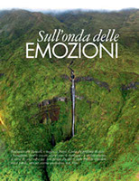
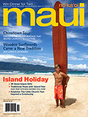
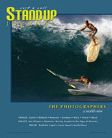
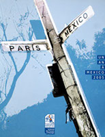

INDEPENDENT CREATIVE STUDIO MAUI, HAWAII · WORKING WORLDWIDE
Ideas into images.
Stories into existence.
Thoughtful websites. Honest photographs.
Films that make you feel something.
Explore the work ↘
DESIGN WITH INTENTION. CREATE WITH FEELING.SCROLL TO DISCOVER ↓
A MULTIDISCIPLINARY PERSPECTIVE
Different mediums.
One creative spirit.
01 / DIGITAL EXPERIENCES
Webdesign.
Web design that tells your story.
Designed to look good. Built to feel right.
Ready to bring your online vision to life? Let's build something.
02 / THROUGH THE LENS
Photography.
Travel photography and moments beyond.
Chasing light. Finding the extraordinary.
LANDSCAPES / TRAVEL / LIFEA moment, held a little longer.
Open to photography collaborations. Let's connect.
03 / STORIES IN MOTION
Filmmaking.
People, places, and stories worth telling.
Brought to life through video production.
Have a story to tell or a moment to capture? Let's create together.
04 / STORIES ON THE PAGE
Writing / Screenwriting.
Three Years Later
Logline
When a new crime mirrors his daughter’s unsolved murder, Tim Rhodes, a grief-stricken detective haunted by visions, must confront his own ghosts to stop the killer from striking again.
Status: Completed – available for option / sale
Endorsement
Contact me for the full script“Tremendous potential, brilliant prose, one of my top-tier.”
Jen Grisanti – Script Consultant
Former VP of Current Programming at CBS/Paramount, NBC Writers on the Verge instructor
The Cycle
Status: In development
Agartha
Status: In development
Writing Services
- Script consultation
- Story development & screenplay rewriting
- Website & general content writing
Available for select projects. Get in touch to discuss.
05 / PUBLISHED WORK & RECOGNITIONPublished Work &
Published Work &
Recognition.
Jupiter 2032
- Best Original ConceptScreen ATX Film Festival
- Best Art DirectionGlobal Non Violent Film Festival
- Excellence AwardWRPN International Film Festival
Sound Travel
- Jury’s Special MentionWhen Sound Creates Images
Paris International Video CompetitionIn partnership with CNC and Institut Français. - NominationsBest Film · Best Animated Film
Published Photography

Elle Italia
Read article PDF (opens in a new tab)
Maui Nō Ka ʻOi Magazine
Read article PDF (opens in a new tab)
Stand Up Journal
Read article PDF (opens in a new tab)
Le Petit Journal Mexico
Read article PDF (opens in a new tab)06 / ABOUT & CONTACTA creative eye.
A creative eye.
A personal connection.
I’m Nathalie Vaglio, a designer, photographer, filmmaker and writer based in Maui, Hawaii. Existence Design is the natural meeting point of my creative pursuits, where ideas, images and stories take shape.
I work with people and businesses near and far to turn ideas into thoughtful visual experiences. A love for detail, a curiosity for the world, and a collaborative spirit guide every project.
ENGLISH · FRANÇAIS · ESPAÑOL